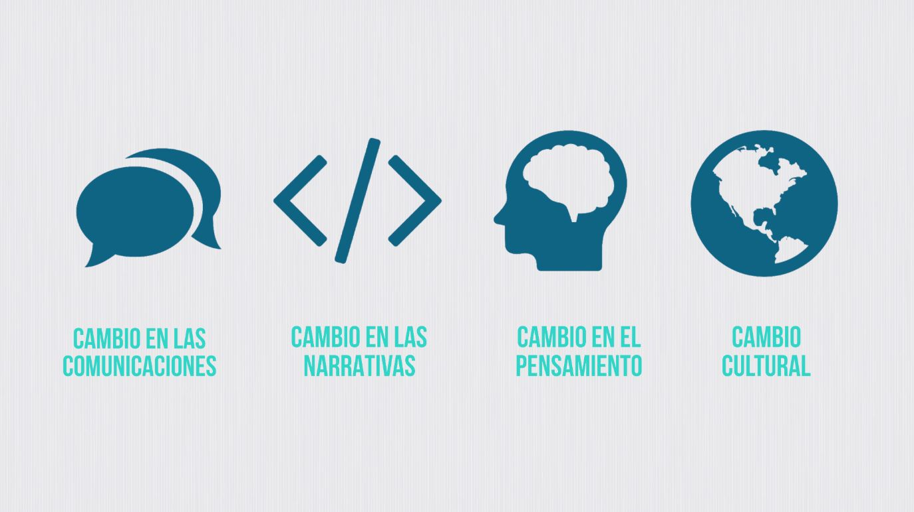
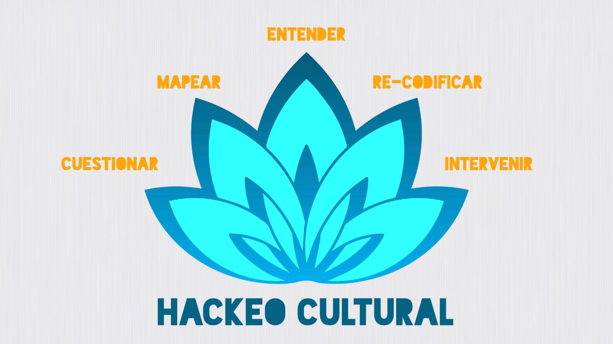

Pensar en iniciar o acoplarse a una campaña de comunicación popular puede resultar intimidante. Los escenarios son complejos y los problemas abundan por todos lados. ¿Por dónde empezar? Uno de los aportes más valiosos de las experiencias de México y Guatemala es la metodología que usaron en todo el proceso. La llaman, al igual que su colectiva, Hackeo Cultural.
Así se presentan las compañeras:
"Hackeo Cultural es una colectiva que emerge a través de varios procesos de intervención y comunicación con activistas y defensores del territorio. Emerge a través de un método de intervención narrativa -así lo llamamos-. Primero comenzamos a trabajar con una organización del gabacho (de Estados Unidos) que se llama TheRules, y a partir de allí, empezamos a desarrollar el propio proceso para los conflictos propios de Latinoamérica, que tienen distintos carices. Nuestra chamba principal se trata de articular gente, activistas y espacios comunes que ya están trabajando en la defensa de la vida, que tiene que ver a veces con el territorio, a veces con conflictos más concretos, y ayudarles así a elaborar la contra-narrativa a las narrativas hegemónicas que se están imponiendo."
¿Narrativa, contra-narrativa? ¿A qué se refieren con eso? Profundicemos. La metodología parte de dos ideas centrales:
1.El poder reside en la habilidad de controlar el lenguaje.
2. Las personas hacemos sentido del mundo a partir de historias.
Las historias que contamos modelan la forma en que vemos el mundo y guían nuestras respuestas a los problemas que enfrentamos. La mejor forma de cambiar el mundo es cambiando las historias en el corazón de nuestras culturas.
Manual Hackeo Cultural
La actividad de comunicar no se trata sólo de mostrar evidencias, de denunciar, de visibilizar... sino que va más allá, se trata de contar historias para hacer sentido del mundo.
Este cambio en cómo abordar la comunicación de campaña implica poner atención en los soportes que nos permiten contar las historias. Hoy nos encontramos en un escenario mediático explosivo. No alcanza con afiches y actos públicos para captar la atención de los grandes medios de comunicación, no alcanza con el circuito de los medios alternativos y comunitarios. Las redes sociales y los nuevos medios técnicos se han masificado y modulan estéticas y formas de expresión propias. Por este motivo la metodología de Hackeo Cultural combina análisis de datos, lingüística, memética, antropología y psicología social. Todo esto con un objetivo claro: el desarrollo de narrativas que disputen las hegemónicas. "Nosotros creemos que un cambio en las comunicaciones puede producir un cambio en las narrativas y por tanto un cambio en el pensamiento, que podría ser un cambio cultural."

En palabras de Andrea, la metodología resulta cautivante porque es básicamente "una sistematización de un montón de buenas prácticas de gente que ha sido muy efectiva haciendo comunicación estratégica, y que además tiene un enfoque muy concreto anticapitalista, que eso es algo bien difícil. Normalmente la comunicación institucional, o que se ha institucionalizado alrededor de ciertas cosas, no nos permite ciertas acciones, ciertas actividades y creo que la metodología de Hackeo Cultural es justamente darle la vuelta a esas lógicas".
El Hackeo Cultural sucede todo el tiempo a nuestro alrededor, tanto hacia la izquierda como a la derecha, de los dos lados de la línea divisoria entre el "norte y el sur global". Es esencialmente una forma en que los discursos son cambiados y los símbolos contestados. Muchas comunidades y activistas han hackeado la cultura a través de la historia de la resistencia. Nadie tiene propiedad de una metodología para hacerlo.
Metodología Hackeo Cultural
En el siguiente video (en inglés) se presenta brevemente la idea de Hackeo Cultural:
A primera impresión el término "hackeo" puede sonar a ciberdelincuente, pero eso es también una narrativa hegemónica sobre el concepto. En La ética hacker y el espíritu en la era de la información (2002) el filósofo finlandés Pekka Himanen investiga sobre esta nueva forma de ver el mundo en la era informática y explica que, en los propios términos de esta comunidad, ser hacker es básicamente ser una persona experta o entusiasta de cualquier tipo (se puede ser hacker de la astronomía, la cocina o la cultura). Hacker es quien cree que poner en común la información constituye un extraordinario bien, y considera un deber de naturaleza ética compartir su conocimiento y habilidades, ya sea elaborando software abierto o facilitando el acceso a la información y a otros recursos de computación.
El verbo de hackear es entonces investigar con entusiasmo, abrir e intervenir cosas y procesos en principio cerrados, para comprender y compartir el conocimiento como forma de buscar el bien común.
Esta concepción no es precisamente la más popular, por lo que nos resultaba curioso saber cómo recibieron las comunidades campesinas con las que trabajaron cuando se les propuso "hackear la cultura". Al respecto Andrea nos comentaba: "si hay algo que digamos que las comunidades indígenas y que los pueblos organizados en defensa de la vida han sabido hacer es hackear, digamos, es abrir grietas al sistema. Y que en estos momentos las tecnologías de la informática son una herramienta a nuestro alcance y que entonces por eso desde ahí es posible, pero en el caso de Guatemala desde hace cincuenta años las radios comunitarias han hackeado la narrativa hegemónica y han generado redes propias de comunicación. Entonces, el hackeo es incluso algo que hicieron mis abuelos hace 500 años cuando encriptaron conocimientos ancestrales adentro de las mismas prácticas hegemónicas como las del cristianismo para que no se perdiera nuestro conocimiento ancestral ni nuestras prácticas espirituales. Entonces algo que hemos sabido los pueblos es buscar las maneras en que las herramientas disponibles nos sirvan pues para nuestro fin ¿no? preservar la vida. Entonces pues en este momento que lo que sabemos usar son las compus, los teléfonos celulares y hay gente que le sabe al análisis del big data y a todas estas ondas, pues bienvenido. Yo creo que de ahí también se nutre mucho de por qué esta herramienta le hace sentido a la red con la que trabajamos de comunicadores comunitarios y de banda metida en la tecnología porque es algo que hemos hecho siempre, que es cómo le damos la vuelta al mensaje hegemónico."
La metodología de Hackeo Cultural se integra a la perfección en nuestro territorio, porque parte desde ahí, desde la comunidad y el bien común, y está expresamente pensada "para quienes imaginan y crean la inevitable transición hacia un mundo no capitalista, no patriarcal, no colonial y no racista".
Interesante ¿verdad?
Presentamos brevemente cuales son los pasos o etapas de la metodología:

1. PREGUNTAR: Esta etapa está dirigida a encontrar un terreno compartido en un grupo que planea organizarse en una lucha común (el grupo puede ser diverso en roles y pertenecer a grupos pre-existentes) con la intención de escuchar todas las voces, compartiendo las experiencias personales y las emociones en relación a la lucha, y encontrando motivación común para la organización.
2. MAPEAR: Esta etapa está dirigida a localizar actores y sus dinámicas de poder en una conversación con la intención de crear un mapa que presente de forma clara agentes y relaciones, donde pueden señalarse actores principales, mensajes, espacios de disputa y frecuencia de participación.
3. COMPRENDER: Este proceso está dirigido a analizar los mensajes dominantes de una narrativa, con la intención de revelar de quién o qué se está hablando y en qué términos, así como quién o qué se ignora en el discurso.
4. RECODIFICAR: Este proceso está dirigido a desarmar los elementos de un discurso y de-codificar el sentido profundo de los mensajes, con la intención de analizar los marcos usados en las narrativas dominantes, y luego cambiarlos por marcos que estén políticamente en sincronía con la lucha.
5. INTERVENIR: Esta etapa está dirigida a generar los mensajes significativos para transmitir la intención de la lucha a las audiencias elegidas.
Cada una de estas etapas está precisamente explicada en su manual que puede descargarse (en inglés) desde https://therules.org/culture-hacking/. Para este proyecto la hemos traducido al español y la dejamos disponible como recurso educativo abierto aquí.
Vale aclarar que esta metodología puede seguir las etapas de forma ordenada desde el principio o puede ser ejecutada específicamente desde la etapa que se necesite.
A continuación veremos cómo fueron aplicados en el proceso de #YoPrefieroElLago.